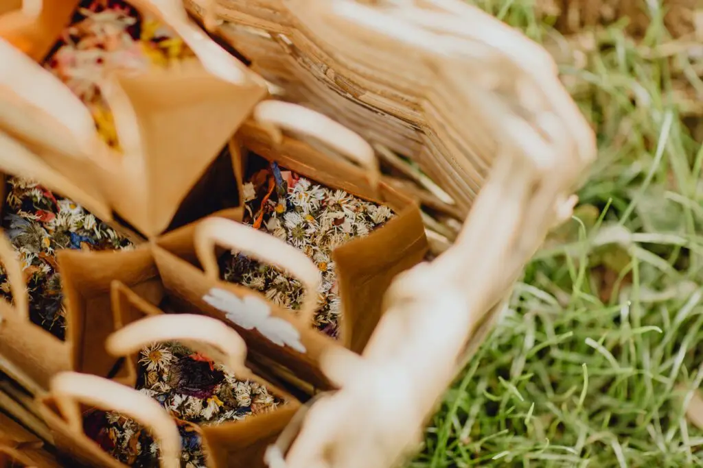
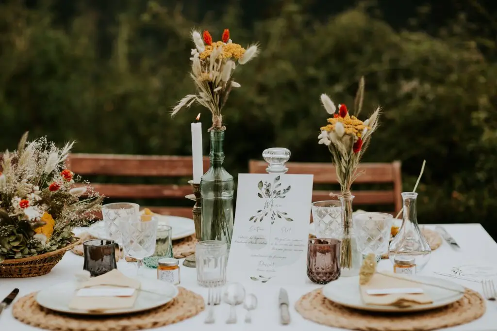

Sometimes a few seconds and a single glance are enough for a feeling of wellbeing to wash over us...
Let a decorator transform your reception venue and create some magic!
For several years now, I have been accompanying couples in planning their wedding as a bespoke, high-end wedding decorator. In love with the Arcachon Bay, I made the choice to work mainly with local suppliers.
For each event, I bring together renowned professionals to form a close-knit team attentive to my clients' expectations. It is thanks to their professionalism and to the cultural and natural riches of our beautiful region that I turn couples' dreams into a unique, unforgettable wedding.
To organise the wedding, I bring together talented professionals who are sensitive to the beauty of the venues, and an exceptional set design takes shape. I draw on my inspirations, my creativity and the things the couple love to create a dream setting.



I created an atmosphere as simple as it is refined. Every element was designed to create a bubble of love and magic. When I design a wedding, I imagine it as a moment of joy, celebration and wonder. My mission is to turn a celebration into an unforgettable event. What I love most about my job as a wedding planner and designer is seeing stars shine in the eyes of my clients and their loved ones. So, as for every stage of the wedding, I choose the best suppliers.
After all this organisation comes the installation and setting up of all those little details for your day. My advice is to savour the moment, because it's a day that races by from morning to night. Emotions run high, but one thing is certain: the wow effect will be there.
That's why I suggest we meet, if only so I can tell you, with a touch of humour, that wedding preparations can sometimes be crazy.
But whatever happens on the big day, stay calm: the day will be magical, and I'm here for you!
Lovely Day Event offers several services
Wedding planning
I step in at every stage of your preparations and guide you through your choices, bringing ideas and suggestions so that your wedding looks like no one but you.
Wedding design
Creative and passionate, I am a certified Wedding Designer and I create a scenographic atmosphere that matches the theme of your wedding.
On-the-day coordination
I will be the conductor of your day, managing the suppliers, the set-up of your decor and the smooth running of this beautiful day.